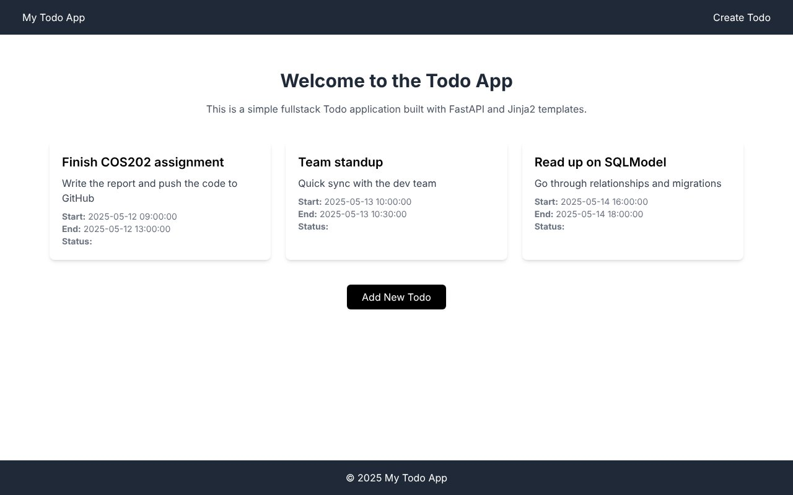
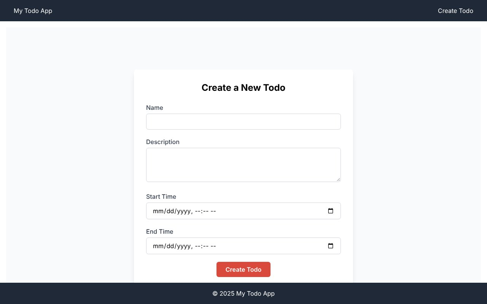
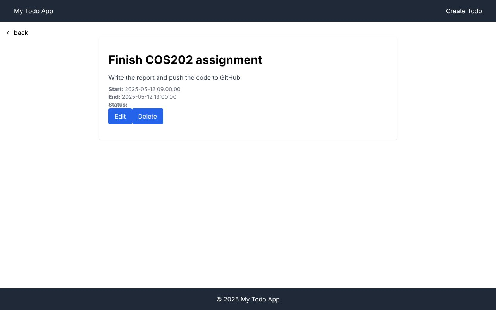

Full-stack Todo App
A server-rendered todo app with a real database behind it. Built for my COS202 course to learn how the back end and front end of a web app fit together.
The problem
Most todo apps I'd built before only lived in the browser. Refresh the page or open it on another device and everything was gone. For this project I wanted the tasks stored properly in a database, with a back end handling every create, read, update and delete, so the data stays put no matter what happens on the page.
What I built
The app is written in Python with FastAPI. Each todo has a name, a description, and a start and end time. SQLModel defines the table and handles the queries, and the data is stored in PostgreSQL. The pages are rendered on the server with Jinja2 templates and styled with Tailwind CSS. To keep setup simple, Docker Compose starts the Postgres database along with pgAdmin, so I can look at the tables while I work.
Features
- Create, view, edit and delete todos, each on its own page
- Start and end time for every task
- Flash messages after each action, e.g. "Todo created successfully!"
- The create route accepts both normal form posts and JSON, so it can also be used like an API
- Returns a proper 404 when a todo doesn't exist
- Database connection string kept in a
.envfile instead of in the code - Gzip compression on responses
Screenshots



What I learned
- How a request moves through the app: the route, then the database session, then the template, then the response
- Using FastAPI's dependency injection to open and close a database session for each request
- Redirecting after a POST (status 303) so refreshing the page doesn't submit the form again
- Running a database in Docker instead of installing Postgres directly on my laptop
- Next time I'd add user accounts so everyone gets their own list, and a "done" status for each task